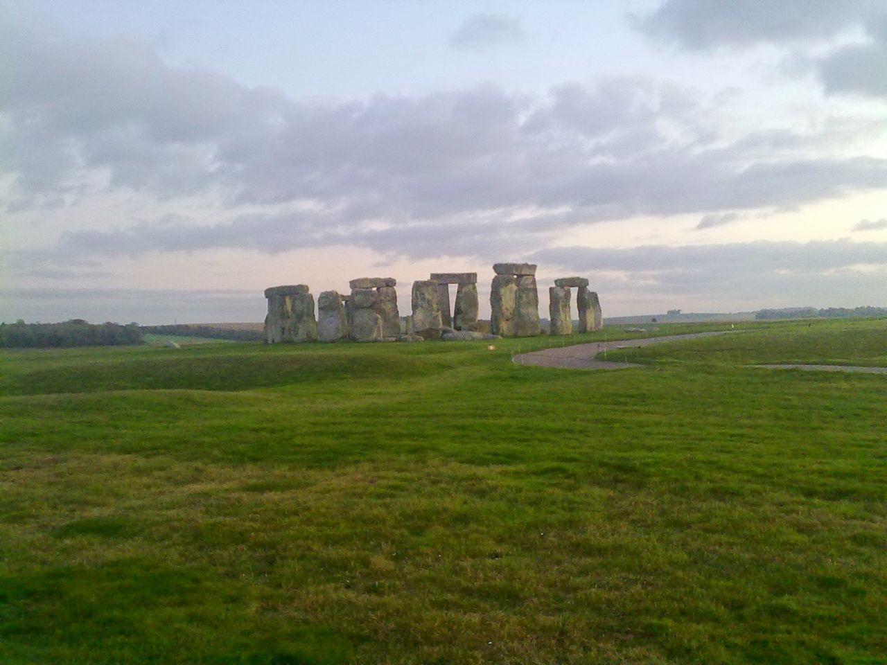
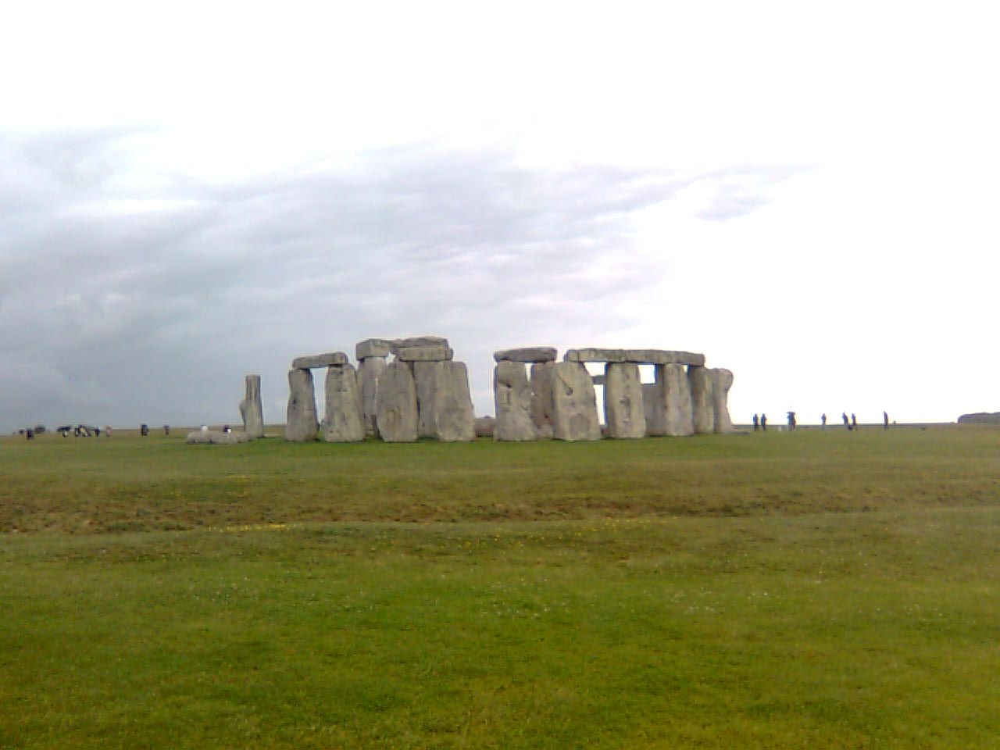
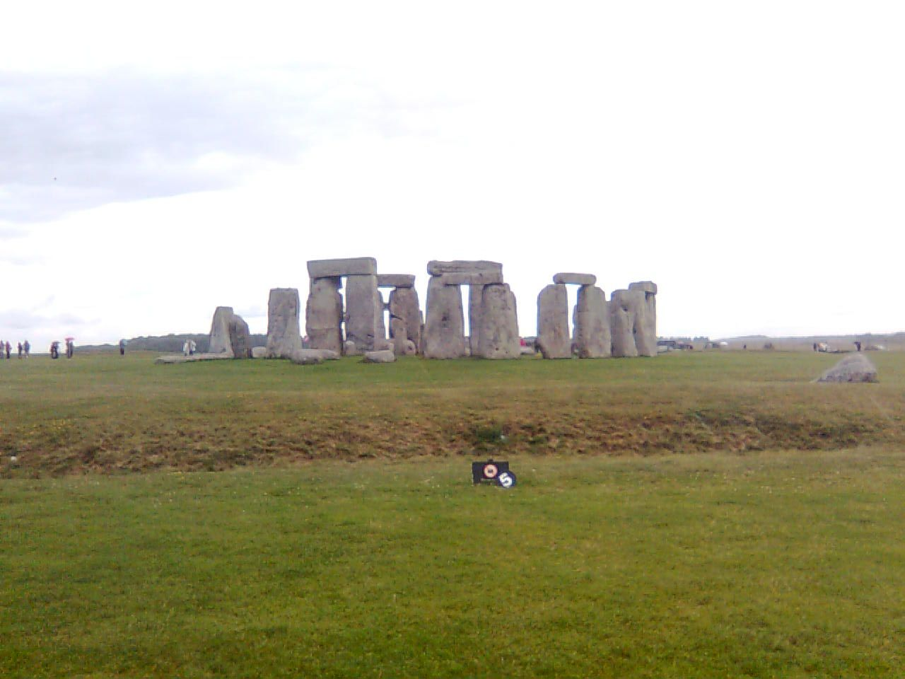
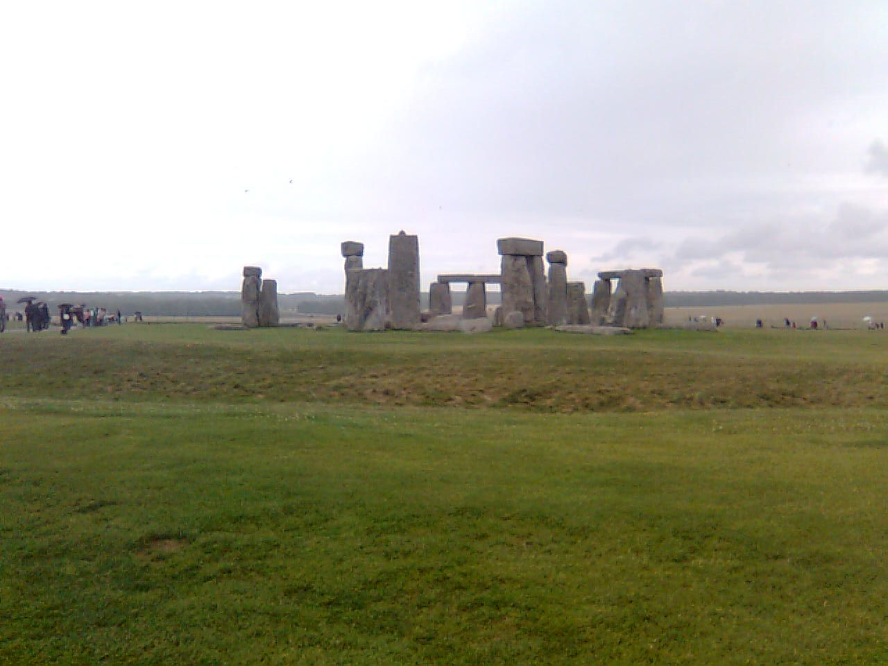
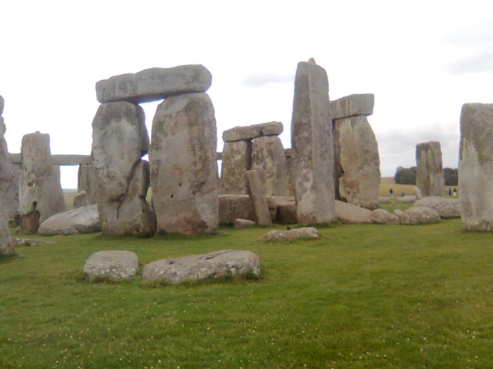
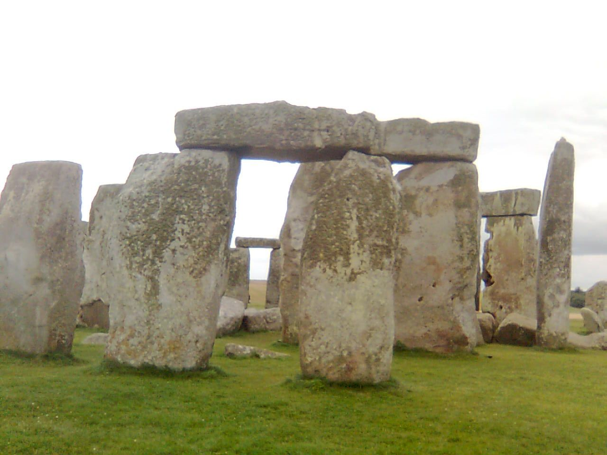
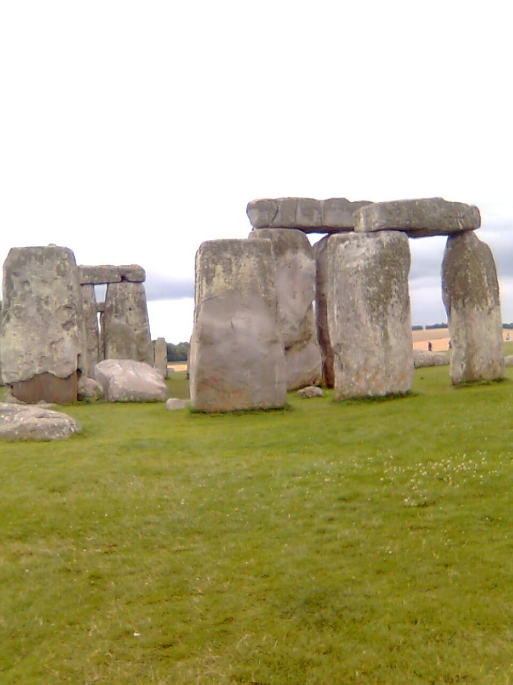
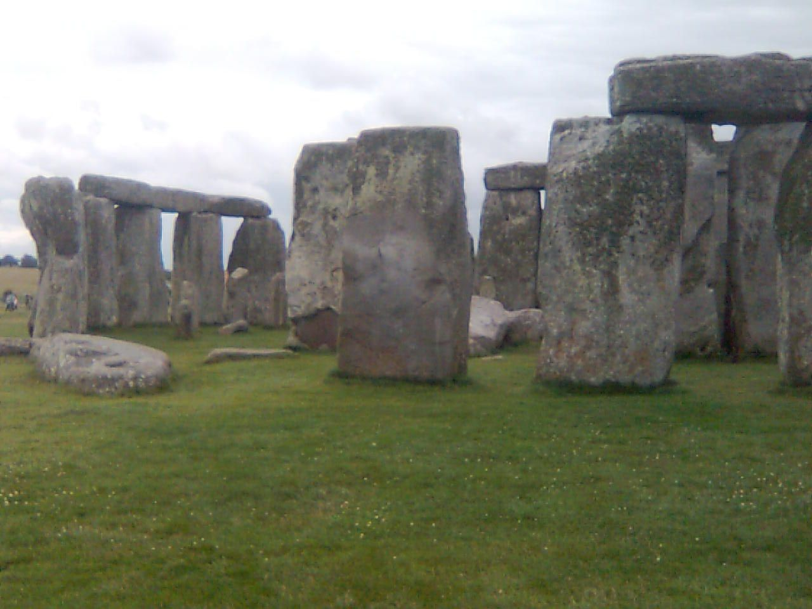
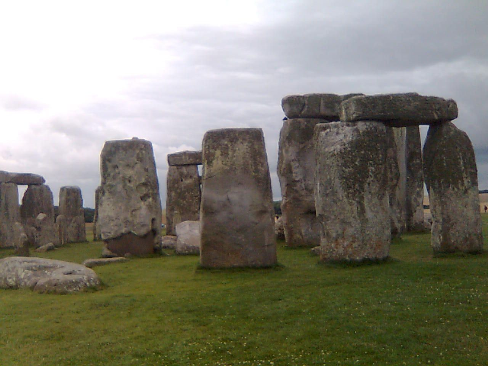

Who built Stonehenge, when – and how do you raise a 25-tonne stone without wheels, metal or machines? Rotate the model, travel through 5,000 years, watch the sun rise at midsummer, and follow step by step how the stones were most likely raised.
Drag to rotate, pinch or scroll to zoom. Choose a period and let the sun run its course. The model is approximate: the number, size and position of the stones follow the excavations, but the shape of each stone is simplified.
The whole monument is built around one line: to the north-east the sun rises on the longest day of the year, and in the exactly opposite direction it sets on the shortest. The direction follows from the latitude φ and the sun’s declination δ:
cos A = sin δ / cos φ
With Stonehenge’s latitude φ = 51.18° and δ ≈ 24.0° (the Earth’s axis was tilted slightly more 4,500 years ago than today’s 23.44°) we get A ≈ 49.6° from north – exactly the direction in which the entrance and the Avenue point. The formula assumes a flat horizon and no refraction; in reality hills and the atmosphere shift the point a little. The model automatically uses the old axial tilt in the past and the present one today.
Nobody left building instructions. What we know comes from excavating the stone holes and from full-scale experiments. Press ▶ and follow the six stages – you can pause, scrub, change speed and run backwards. Each figure in the animation stands for about ten people.
Stonehenge is carpentry – in stone. On top of each upright are tenons that fit into mortice holes on the underside of the lintels, and the lintels of the outer circle interlock with tongue-and-groove joints. Joints like these are otherwise known from woodwork, and they are why the lintels have stayed in place for 4,500 years.
A stone on a sledge has to overcome the friction against the ground and – uphill – part of its own weight. The force is
F = m · g · (μ · cos α + sin α)
where μ is the coefficient of friction and α is the slope. Divide by what one person can pull and you have the size of the team.
Greased timber rails give μ of about 0.1–0.2; a sledge directly on grass or soil more like 0.4–0.6. In an experiment in the 1990s about 130 volunteers pulled a 40-tonne concrete copy of the largest stone up a gentle slope on a sledge running on greased timber rails. Put in the numbers and see what friction that corresponds to.
Stonehenge stands on chalk, and none of the stones is local. The three kinds of stone were fetched from three widely different places.
Stonehenge was not built by druids – they belong to the Iron Age, two thousand years later – nor by the wizard Merlin, as people believed in the Middle Ages. The builders were Stone Age farmers. Their ancestors migrated from Anatolia, followed the Mediterranean to the Iberian Peninsula and reached Britain around 4000 BC. They had no wheels, metal or writing, but they could organise hundreds of people.
At Durrington Walls, three kilometres to the north-east, archaeologists have found a large settlement from around 2500 BC, interpreted as the builders’ village. Soon after, around 2450 BC, the Beaker people arrived from the continent and almost completely replaced the old population. The later rebuilding was thus done by other people than those who raised the great stones.
Stonehenge is about an hour and a half by car from Woolston in Southampton, where I grew up. The photos here are my own. Tap a photo to see it full size.









Take Stonehenge with you: a self-contained version that works offline, can be installed on a phone or tablet, and needs no internet connection. Free to use and share under CC BY 4.0.
⬇ Download the Stonehenge app (zip, 1.2 MB)
Unzip and put the folder on a web server (HTTPS) or run it locally – see README.txt inside. On a phone, open the online version and choose “Add to Home Screen”.